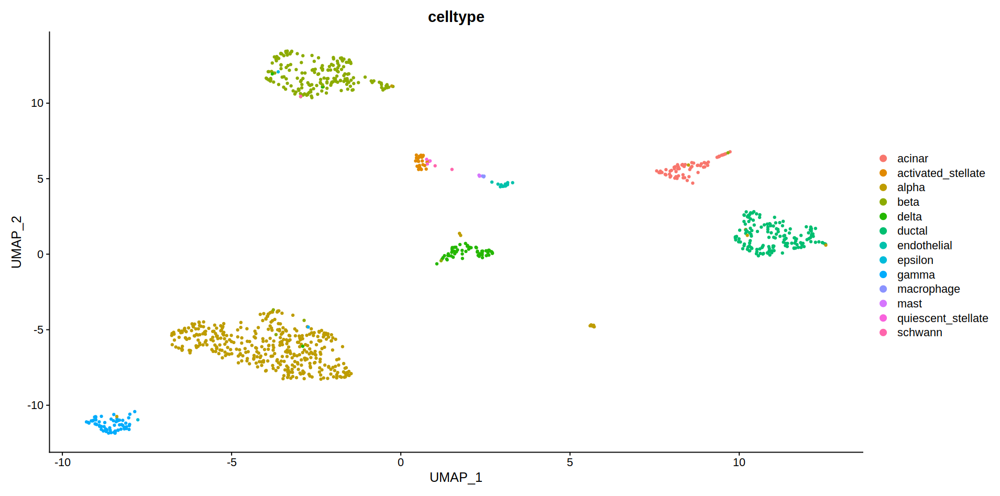

When joint analysis of two or more single cell sequencing data is to
be performed, we need to first integrate the individual datasets. In
Chevreul, a single function integration_workflow is capable
of integrating multiple Seurat objects provided as a list.
First step in this process is to load all the packages required
TLDR
Here, we are using the panc8 dataset, which is produced
in two batches using different technologies. The
SplitObject() function splits the seurat object into a list
containing each batch as element. This list of seurat objects can then
be integrated using the integration_workflow() function,
which identifies shared cell states that are present across different
single cell datasets.
batches <-
human_gene_transcript_seu[,!is.na(human_gene_transcript_seu$Prep.Method)] %>%
Seurat::SplitObject(split.by = "Prep.Method") %>%
identity()
integrated_seu <- integration_workflow(batches)Batch effects are problematic
When analyzing data across multiple batches, batch effects can become
problematic and compromise integration and interpretation of the data.
For instance, the dataset human_gene_transcript_seu
contains data obtained following two different preparation method. When
this data is analyzed without integration we notice that in the Zhong
method cluster 2 is barely represented. from the plot of marker features
we know that cluster 2 has high expression of features associated with
cones. this absence of cluster 2 in in Zhong method can become
problematic during downstream analysis
plot_markers(human_gene_transcript_seu, metavar = "gene_snn_res.0.2", num_markers = 10) +
DimPlot(human_gene_transcript_seu, group.by = "gene_snn_res.0.2", split.by = "Prep.Method")
Integrate within species
The integration_workflow() function can integrate
datasets obtained from mouse or human source. When integrating datasets
obtained from the same species, the data is processed according to
standard integration workflow.
Integrate accross species
integration_workflow() can also be used to integrate
datasets collected from different species, i.e., human and mouse. In
this case, the sub-function cross_species_integrate() first
converts the mouse seurat objects to human by transforming features in
the mouse dataset into human specific features and then integrates the
two objects using standard integration workflow.
Steps of integration
The standard integration procedure in
integration_workflow() includes multiple sub-functions
responsible for performing different steps of integration.
Prior to integration, seurat_preprocess performs
standard preprocessing (log-normalization) and identifies variable
features individually for each element in the list. Then, anchors are
identified between the individual datasets using
FindIntegrationAnchors which is then used by
IntegrateDatato return a Seurat object containing a new
Assay, which holds an integrated expression matrix for all cells.
Downstream analysis is performed on this integrated matrix by
seurat_integration_pipeline sub-function which scales the
integrated data, reduces the dimensions of seurat object, performs
clustering at different resolutions and identifies marker genes.
Finally, the resulting integrated datasets can be visualized by plotting the output
DimPlot(integrated_seu, reduction = "umap", group.by = "Prep.Method", )
